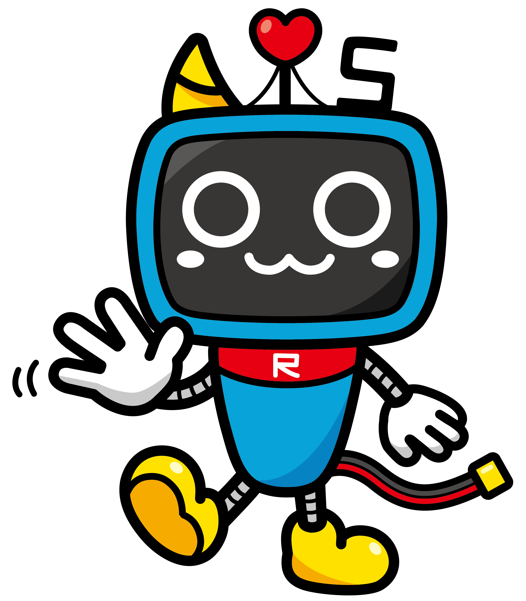

<!DOCTYPE html>
<html>

<head>
    <title>Pain Expression Evaluation Experiment</title>
    <script src="https://unpkg.com/jspsych@8.2.0"></script>
    <script src="https://unpkg.com/@jspsych/plugin-html-keyboard-response@2.1.0"></script>
    <script src="https://unpkg.com/@jspsych/plugin-image-keyboard-response@2.1.0"></script>
    <script src="https://unpkg.com/@jspsych/plugin-html-button-response@2.1.0"></script>
    <script src="https://unpkg.com/@jspsych/plugin-preload@2.1.0"></script>
    <link href="https://unpkg.com/jspsych@8.2.0/css/jspsych.css" rel="stylesheet" type="text/css" />
    <script src="https://unpkg.com/@jspsych/plugin-survey-text@2.1.0"></script>

    <style>

    </style>
</head>

<body></body>
<script>
    // Set the selected language: "en" for English, "jp" for Japanese
    // Check URL parameters for language, default to "en"
    const urlParams = new URLSearchParams(window.location.search);
    var selectedLang = urlParams.get('lang') || "en";
    
    // Create language toggle button style and HTML
    const langButtonStyle = document.createElement('style');
    langButtonStyle.textContent = `
        #langToggle {
            position: fixed;
            top: 20px;
            right: 20px;
            padding: 10px 20px;
            background-color: #4CAF50;
            color: white;
            border: none;
            border-radius: 4px;
            cursor: pointer;
            z-index: 1000;
        }
        #langToggle:hover {
            background-color: #45a049;
        }
    `;
    document.head.appendChild(langButtonStyle);

    const langButton = document.createElement('button');
    langButton.id = 'langToggle';
    langButton.textContent = selectedLang === "en" ? 'Switch to 日本語' : 'Switch to English';
    document.body.appendChild(langButton);

    // Add click handler to toggle language
    langButton.addEventListener('click', function() {
        const newLang = selectedLang === "en" ? "jp" : "en";
        window.location.href = `${window.location.pathname}?lang=${newLang}`;
    });


    // Translation dictionary for all prompts and options:
    var translations = {
        en: {
            instructions_intro: `
                <div style="display: flex; justify-content: space-between; align-items: center; margin-bottom: 20px;">
                    
                    
                </div>
                <h1>Evaluating Experiment for Machine Pain Reaction</h1>
                <p>In this experiment, you will evaluate the naturalness of human facial movements.</p>
                <p>You will focus on facial expressions.</p>
                <br>
                <p><i>Press any key to move forward</i>.</p>
            `,
            instructions_second: `
                <h1>Instructions</h1>
                <p>You will be watching several videos of faces reacting to a pain-causing action <br> (the higher the chart value, the stronger the action).</p>
                <br>
                <p>There will be 3 parts on your screen:</p>
                <p>1. The top part shows a play button (green). Please <b>click play button</b> to play the videos.</p>
                <p>2. The middle part displays the videos. Depending on the question, there will be multiple videos.</p>
                <p>3. The bottom part shows the question. Please choose the option that best answers the question.</p>
                <br>
                <p>It will take you 12-15 minutes to complete the experiment.</p>
                <br>
                <p><i>Press any key to move forward</i>.</p>
            `,
            performer_questions: [
                "What is your name?",
                "How old are you?",
                "How offen do you see a patient in pain? Per week basis.",
                "How long have you been in charge of treating a real patient? If not, please enter 0."
            ],
            prompt_reaction: 'How strong do you think the reaction is to the pain-causing action? <br> On the left is the action chart (stimuli), the HIGHER the chart value, the STRONGER the action)',
            options_reaction: ['Very weak', 'Weak', 'Slightly strong', 'Strong', 'Very strong'],
            prompt_realistic: 'Which option has more realistic movement?',
            prompt_diversity_scale: 'How diverse is the SCALE of movements among the videos? <br> A bigger scale means a larger movement, for example large movement of the eyebrows.',
            prompt_diversity_type: 'How diverse are the TYPES of movements among the videos? <br> For example, different regions of movement, or quick versus slow movements.',
            prompt_diversity_general: 'How diverse are the videos?',
            options_diversity: ['Very similar', 'Similar', 'Slightly Different', 'Diverse', 'Very diverse'],
            prompt_overall: 'Which reaction do you prefer?',
            prompt_overall_label: 'Which reaction do you prefer? <br> Please note the details why do you choose that option.',
            options_overall_label: ['Real human', 'Machine generated'],
            survey_explain: 'Why do you choose your last options (please describe in detail)?',
            playAll: 'Play All',
            pauseAll: 'Pause All',
            thank_you: `<p style="font-size: 24px; text-align: center; margin-top: 50px;">Thank you for participating in our experiment!</p>`,
            next_trial: "We will move to next trial in 1 second.",
            video_warning_title: "WARNING",
            video_warning: "Please watch each video fully. Failure to do so will cause the experiment to fail."
        },
        jp: {
            instructions_intro: `
            <div style="display: flex; justify-content: space-between; align-items: center; margin-bottom: 20px;">
                
                
            </div>
            <h1>機械痛反応評価実験</h1>
            <p>この実験では、人間の表情運動の自然さを評価していただきます。</p>
            <p>表情の動きに注目してください。</p>
            <br>
            <p><i>次に進むには、任意のキーを押してください</i>。</p>
            `,
            instructions_second: `
            <h1>実験の説明</h1>
            <p>痛みを与える行動に対する顔の反応動画をご覧いただきます。<br>(グラフの値が高いほど、強い刺激となります)。</p>
            <br>
            <p>画面は以下の3つの部分に分かれています：</p>
            <p>1. 上部にプレイボタン（緑色）が表示されます。動画を再生するには<b>プレイボタンをクリック</b>してください。</p>
            <p>2. 中央に動画が表示されます。質問に応じて複数の動画が表示されます。</p>
            <p>3. 下部に質問が表示されます。質問に最も適した回答を選択してください。</p>
            <br>
            <p>実験の所要時間は12～15分です。</p>
            <br>
            <p><i>次に進むには、任意のキーを押してください</i>。</p>
            `,
            performer_questions: [
            "お名前を入力してください。",
            "年齢を入力してください。",
            "週にどのくらいの頻度で痛みを感じている患者さんを見かけますか？",
            "実際の患者の治療経験は何年ですか？経験がない場合は0を入力してください。"
            ],
            prompt_reaction: '痛みを与える刺激に対する反応の<strong>強さ</strong>はどの程度ですか？<br>(左のグラフの値が高いほど、強い刺激です)',
            options_reaction: ['非常に弱い', '弱い', 'やや強い', '強い', '非常に強い'],
            prompt_realistic: 'どちらの動きがより自然に見えますか？',
            prompt_diversity_scale: '動画間の動きの<strong>大きさ</strong>にどの程度の違いがありますか？<br>例えば、眉の動きの大きさなど。',
            prompt_diversity_type: '動画間の動きの<strong>種類</strong>にどの程度の違いがありますか？<br>例えば、動く部位の違いや、素早い動きと遅い動きの違いなど。',
            prompt_diversity_general: '動画にどの程度の多様性がありますか？',
            options_diversity: ['非常によく似ている', '似ている', 'やや異なる', '多様', '非常に多様'],
            prompt_overall: 'どちらの反応が良いと思いますか？',
            prompt_overall_label: 'どちらの反応が良いと思いますか？<br>その選択理由を詳しく説明してください。',
            options_overall_label: ['実際の人間', '機械生成'],
            survey_explain: '最後の選択の理由を詳しく説明してください。',
            playAll: 'すべて再生',
            pauseAll: '一時停止',
            thank_you: `<p style="font-size: 24px; text-align: center; margin-top: 50px;">実験にご参加いただき、ありがとうございました！</p>`,
            next_trial: "1秒後に次の試行に移ります。",
            video_warning_title: "警告",
            video_warning: "ビデオを最後まで視聴してください。そうしないと実験が失敗します。"
        }
    };

    /* initialize jsPsych */
    var jsPsych = initJsPsych({
        show_progress_bar: true,
        message_progress_bar: '',
        on_finish: function () {

            var data = jsPsych.data.get().values();
            console.log(data);
            // Send data to server
            fetch('/save_data', {
                method: 'POST',
                headers: {
                    'Content-Type': 'application/json',
                },
                body: JSON.stringify({
                    session_id: session_id,
                    timestamp: new Date().toISOString(),
                    data: data
                })
            })
            .then(response => response.json())
            .then(data => console.log('Success:', data))
            .catch((error) => console.error('Error:', error));

            //jsPsych.data.displayData();
            jsPsych.getDisplayElement().innerHTML = translations[selectedLang].thank_you;
            // Add refresh button
            const refreshBtn = document.createElement('button');
            refreshBtn.textContent = selectedLang === "jp" ? '新しいセッションを開始' : 'Start New Session';
            refreshBtn.style.cssText = `
                display: block;
                margin: 20px auto;
                padding: 10px 20px;
                font-size: 16px;
                background-color: #4CAF50;
                color: white;
                border: none;
                border-radius: 4px;
                cursor: pointer;
            `;
            refreshBtn.onclick = () => window.location.reload();
            jsPsych.getDisplayElement().appendChild(refreshBtn);
        }
    });

    /* create timeline */
    var timeline = [];

    const session_id = jsPsych.randomization.randomID(15);

    // Fisher-Yates shuffle function
    function shuffleArray(array) {
        for (let i = array.length - 1; i > 0; i--) {
            const j = Math.floor(Math.random() * (i + 1));
            [array[i], array[j]] = [array[j], array[i]];
        }
        return array;
    }
    function createVideoComparison(videoList, isSuffle = true, withTrueLabel = false, cropHeight = null, cropPosition = 50, prompt = 'Which generated video do you prefer?', trial_type = 'video-comparison',
                                    options = null
    ) {
        const validPosition = Math.max(0, Math.min(100, cropPosition));
        
        // Add CSS to head if not already present
        if (!document.getElementById('video-comparison-styles')) {
            const styles = document.createElement('style');
            styles.id = 'video-comparison-styles';
            styles.textContent = `
                .video-container {
                    display: flex;
                    flex-wrap: wrap;
                    justify-content: center;
                    gap: 20px;
                    padding: 20px;
                }
                .sample-video-wrapper {
                    flex: 1;
                    min-width: 300px;
                    max-width: 400px;
                    margin: 10px;
                }
                .video-label {
                    text-align: center;
                    margin-bottom: 10px;
                    font-weight: bold;
                }
                .video-frame {
                    width: 100%;
                    overflow: hidden;
                }
                .video-frame video {
                    width: 100%;
                    height: auto;
                }
            `;
            document.head.appendChild(styles);
        }

        return {
            timeline: [
                {
                    type: jsPsychHtmlKeyboardResponse,
                    stimulus: translations[selectedLang].next_trial,
                    choices: "NO_KEYS",
                    trial_duration: 1000
                },
                {
                    type: jsPsychHtmlButtonResponse,
                    stimulus: function () {
                        var selectableVideos = videoList.filter(v => v.selectable);
                        var shuffledSelectable = isSuffle ? shuffleArray([...selectableVideos]) : selectableVideos;
                        const displayOrder = [...shuffledSelectable];

                        let videoHTML = `
                            <div id="video-warning" style="text-align: center; margin: 3px; padding: 3px; background-color: #ffebee; border: 2px solid #ef5350; border-radius: 4px;">
                                <h4 style="color: #c62828; margin: 0 0 3px 0;">${translations[selectedLang].video_warning_title}</h4>
                                <p style="color: #b71c1c; margin: 0; font-size: 0.8em;">${translations[selectedLang].video_warning}</p>
                            </div>
                        `;

                        videoHTML += createPlayAllButton() 

                        videoHTML +='<div class="video-container">';

                            const noCrop = videoList.filter(v => v.type === "stimuli");
                            noCrop.forEach((video) => {
                                videoHTML += `
                                    <div class="sample-video-wrapper">
                                        <div class="video-label">Stimuli</div>
                                        <div class="video-frame">
                                            <video>
                                                <source src="${video.path}" type="video/mp4">
                                            </video>
                                        </div>
                                    </div>
                                `;
                            });

                        displayOrder.forEach((video, index) => {
                            const cropStyle = cropHeight ? 
                                `style="height: ${cropHeight}px; object-fit: cover; object-position: center ${validPosition}%;"` : 
                                '';
                            
                            videoHTML += `
                                <div class="sample-video-wrapper">
                                    <div class="video-label">
                                        ${withTrueLabel ? video.type : (selectedLang === "jp" ? `オプション ${index + 1}` : `Option ${index + 1}`)}
                                    </div>
                                    <div class="video-frame">
                                        <video ${cropStyle}>
                                            <source src="${video.path}" type="video/mp4">
                                        </video>
                                    </div>
                                </div>
                            `;
                        });

                        videoHTML += '</div>';
                        return videoHTML;
                    },
                    choices: function () {
                        if (options) {
                            return options;
                        }
                
                        const selectableVideos = videoList.filter(v => v.selectable);
                        return selectableVideos.map((_, index) => 
                            selectedLang === "jp" ? `オプション ${index + 1}` : `Option ${index + 1}`
                        );
                    },
                    prompt: prompt,
                    on_load: function () { initializeVideoControls() },
                    on_finish: function(data) {

                        const stimulusElement = document.createElement('div');
                        stimulusElement.innerHTML = data.stimulus;
                        const videoElements = stimulusElement.querySelectorAll('video source');
                        data.video_order = Array.from(videoElements).map(source => {
                            const path = source.getAttribute('src');
                            const videoEntry = videoList.find(v => v.path === path);
                            return videoEntry ? videoEntry.type : 'unknown';
                        }).filter(type => {
                            const video = videoList.find(v => v.type === type);
                            return video && video.selectable;
                        });

                        if (options) {
                            // Always store English versions regardless of display language
                            const englishOptions = translations['en'].options_overall_label;
                            // If the options match overall_label options, use English version
                            if (JSON.stringify(options) === JSON.stringify(translations[selectedLang].options_overall_label)) {
                                data.user_selection = englishOptions[data.response];
                                data.options = englishOptions;
                            } else {
                                // For other option types (reaction strength, diversity), use English version if available
                                if (translations['en'].options_reaction && options === translations[selectedLang].options_reaction) {
                                    data.options = translations['en'].options_reaction;
                                    data.user_selection = translations['en'].options_reaction[data.response];
                                } else if (translations['en'].options_diversity && options === translations[selectedLang].options_diversity) {
                                    data.options = translations['en'].options_diversity;
                                    data.user_selection = translations['en'].options_diversity[data.response];
                                } else {
                                    // Fallback to original options if no English version found
                                    data.user_selection = options[data.response];
                                    data.options = options;
                                }
                            }
                        } else {
                            data.user_selection = data.video_order[data.response];
                            data.options = data.video_order;
                        }

                        data.trial_id = jsPsych.randomization.randomID(15);
                        data.session_id = session_id;
                        data.trial_type = trial_type;
                    },
                }
            ],
            timeline_variables: [
                { video_list: videoList }
            ]
        };
    }

    function createPlayAllButton() {
        return `
          <div style="text-align: center; margin-top: 20px;">
              <button id="playAllBtn" 
                      style="padding: 10px 20px; 
                             font-size: 16px; 
                             background-color: #4CAF50; 
                             color: white; 
                             border: none; 
                             border-radius: 4px; 
                             cursor: pointer;">
                  ${translations[selectedLang].playAll}
              </button>
          </div>
      `;
    }

    function addVideoComparison(videoId, withGroundTruth = true, withStimuli = true, cropHeight = null, cropPosition = 50, isSuffle = true, withTrueLabel = false, prompt = 'Which generated video do you prefer?', trial_type = 'video-comparison', withAutoregressive = true, withPainDiffusion = true, options = null,
    customVideoTypes = null) {

        var videoTypes = ['autoregressive', 'paindiffusion', 'groundtruth', 'stimuli'];
        if (customVideoTypes) {
            videoTypes = customVideoTypes;
        }

        var videoSource = [];
        if (withAutoregressive) {
            videoSource.push({ path: `comparison_video/autoregressive/${videoId}.mp4`, type: videoTypes[0], selectable: true });
        }

        if (withPainDiffusion) {
            videoSource.push({ path: `comparison_video/paindiffusion/${videoId}.mp4`, type: videoTypes[1], selectable: true });
        }

        if (withGroundTruth) {
            videoSource.push({ path: `comparison_video/groundtruth/${videoId}.mp4`, type: videoTypes[2], selectable: true });
        }
        if (withStimuli) {
            videoSource.push({ path: `comparison_video/stimuli/${videoId}.mp4`, type: videoTypes[3], selectable: false });
        }
        const comparison = createVideoComparison(videoSource, isSuffle, withTrueLabel, cropHeight, cropPosition, prompt, trial_type, options);
        timeline.push(comparison);
        return comparison;
    }


    // timeline.push(createVideoComparison([{path: "68.mp4", type: "stimuli", selectable: false}])) -->

    function addVideoDiversity(videoId, cropHeight = null, cropPosition = 50, isSuffle = true, withTrueLabel = false, prompt = 'How diverse are the videos?', trial_type = 'video-diversity', options = null) {
        var videoSources = [
            {path: `comparison_video/diversity/try_1/${videoId}.mp4`, type: "try_1", selectable: true},
            {path: `comparison_video/diversity/try_2/${videoId}.mp4`, type: "try_2", selectable: true},
            {path: `comparison_video/diversity/try_3/${videoId}.mp4`, type: "try_3", selectable: true},
            {path: `comparison_video/diversity/try_4/${videoId}.mp4`, type: "try_4", selectable: true},
            ];
        const comparison = createVideoComparison(videoSources, isSuffle, withTrueLabel, cropHeight, cropPosition, prompt, trial_type, options);
        timeline.push(comparison);
    }


    var instructions = {
        type: jsPsychHtmlKeyboardResponse,
        stimulus: translations[selectedLang].instructions_intro,
        post_trial_gap: 500
          };

    timeline.push(instructions);

    var instructions = {
        type: jsPsychHtmlKeyboardResponse,
        stimulus: translations[selectedLang].instructions_second,
        post_trial_gap: 500
      };

    timeline.push(instructions);

    var perfomer_trial = {
        type: jsPsychSurveyText,
        questions: translations[selectedLang].performer_questions.map(q => { return {prompt: q}; }),
        data: {
            questions: translations[selectedLang].performer_questions,
        }
      };

    timeline.push(perfomer_trial);


    // Convert string to array and clean up
    const numbers = '68 38 17 29 53 50 95 32 78 9 37 28 87 39 56 86 34 52 6 89 57 90 45 82 51 33 97 46 85 11 7 76 36 43 10 18 67 12 60 66 27 63 4 58 14 72 22'.split(' ').map(Number);

    // Fisher-Yates shuffle algorithm
    function shuffle(array) {
        for (let i = array.length - 1; i > 0; i--) {
            const j = Math.floor(Math.random() * (i + 1));
            [array[i], array[j]] = [array[j], array[i]];
        }
        return array;
    }

    // controllablity

    // Get 3 random numbers
    var randomThree = shuffle([...numbers]).slice(0, 3);

    prompt = translations[selectedLang].prompt_reaction;
    options = translations[selectedLang].options_reaction;
    // groundtruth vs stimuli
    addVideoComparison(
        videoId = randomThree[0],
        withGroundTruth = true,
        withStimuli = true,
        cropHeight = null,
        cropPosition = 0,
        isSuffle = false,
        withTrueLabel = false,
        prompt = prompt,
        trial_type = 'reaction_strength_groundtruth',
        withAutoregressive = false,
        withPainDiffusion = false,
        options = options
    )

    addVideoComparison(
        videoId = randomThree[1],
        withGroundTruth = true,
        withStimuli = true,
        cropHeight = null,
        cropPosition = 0,
        isSuffle = false,
        withTrueLabel = false,
        prompt = prompt,
        trial_type = 'reaction_strength_groundtruth',
        withAutoregressive = false,
        withPainDiffusion = false,
        options = options
    ) 

    // paindiffusion vs stimuli
    addVideoComparison(
        videoId = randomThree[2],
        withGroundTruth = false,
        withStimuli = true,
        cropHeight = null,
        cropPosition = 0,
        isSuffle = false,
        withTrueLabel = false,
        prompt = prompt,
        trial_type = 'reaction_strength_paindiffusion',
        withAutoregressive = false,
        withPainDiffusion = true,
        options = options
    )

    addVideoComparison(
        videoId = randomThree[1],
        withGroundTruth = false,
        withStimuli = true,
        cropHeight = null,
        cropPosition = 0,
        isSuffle = false,
        withTrueLabel = false,
        prompt = prompt,
        trial_type = 'reaction_strength_paindiffusion',
        withAutoregressive = false,
        withPainDiffusion = true,
        options = options
    )


    randomThree = shuffle([...numbers]).slice(0, 3);
    // eye region (70, 20)
    // mouth region (100, 80)
    // full face (null, 0)
    prompt = translations[selectedLang].prompt_realistic;
    addVideoComparison(
        randomThree[0],    // videoId
        true,              // withGroundTruth 
        true,              // withStimuli
        70,                // cropHeight
        20,                // cropPosition
        true,             // isSuffle
        false,             // withTrueLabel
        prompt,            // prompt
        'realistic_crop_eye_paindiffusion_groundtruth', // trial_type
        false,             // withAutoregressive
        true,             // withPainDiffusion
        null,           // options
        null               // customVideoTypes
    );
    addVideoComparison(
        randomThree[1],    // videoId
        false,              // withGroundTruth 
        true,              // withStimuli
        70,                // cropHeight
        20,                // cropPosition
        true,             // isSuffle
        false,             // withTrueLabel
        prompt,            // prompt
        'realistic_crop_eye_paindiffusion_autoregressive', // trial_type
        true,             // withAutoregressive
        true,             // withPainDiffusion
        null,           // options
        null               // customVideoTypes
    );
 
    randomThree = shuffle([...numbers]).slice(0, 3);

    prompt = translations[selectedLang].prompt_realistic;
    addVideoComparison(
        randomThree[0],    // videoId
        true,              // withGroundTruth 
        true,              // withStimuli
        100,              // cropHeight
        80,                 // cropPosition
        true,             // isSuffle
        false,             // withTrueLabel
        prompt,            // prompt
        'realistic_crop_mouth_paindiffusion_groundtruth', // trial_type
        false,             // withAutoregressive
        true,             // withPainDiffusion
        null,           // options
        null               // customVideoTypes
    );

    addVideoComparison(
        randomThree[1],    // videoId
        false,              // withGroundTruth 
        true,              // withStimuli
        100,              // cropHeight
        80,                 // cropPosition
        true,             // isSuffle
        false,             // withTrueLabel
        prompt,            // prompt
        'realistic_crop_mouth_paindiffusion_autoregressive', // trial_type
        true,             // withAutoregressive
        true,             // withPainDiffusion
        null,           // options
        null               // customVideoTypes
    );
    //addVideoComparison(randomThree[2], true, true, 100, 80, true, false, prompt=prompt, trial_type = 'realistic_crop_mouth');

    randomThree = shuffle([...numbers]).slice(0, 3);

    prompt = translations[selectedLang].prompt_realistic;

    addVideoComparison(
        randomThree[0],    // videoId
        true,              // withGroundTruth 
        true,              // withStimuli
        null,              // cropHeight
        0,                 // cropPosition
        true,             // isSuffle
        false,             // withTrueLabel
        prompt,            // prompt
        'realistic_overall_paindiffusion_groundtruth', // trial_type
        false,             // withAutoregressive
        true,             // withPainDiffusion
        null,           // options
        null               // customVideoTypes
    );

    addVideoComparison(
        randomThree[1],    // videoId
        false,              // withGroundTruth 
        true,              // withStimuli
        null,              // cropHeight
        0,                 // cropPosition
        true,             // isSuffle
        false,             // withTrueLabel
        prompt,            // prompt
        'realistic_overall_paindiffusion_autoregressive', // trial_type
        true,             // withAutoregressive
        true,             // withPainDiffusion
        null,           // options
        null               // customVideoTypes
    );
    //addVideoComparison(randomThree[0], true, true, null, 0, true, false, prompt=prompt, trial_type = 'realistic_overall_paindiffusion_groundtruth', withPainDiffusion = true, withAutoregressive = false);  
    //addVideoComparison(randomThree[1], false, true, null, 0, true, false, prompt=prompt, trial_type = 'realistic_overall_paindiffusion_autoregressive', withPainDiffusion = true, withAutoregressive = true);
    //addVideoComparison(randomThree[2], true, true, null, 0, true, false, prompt=prompt, trial_type = 'realistic_overall');

    randomThree = shuffle([...numbers]).slice(0, 3);

    prompt = translations[selectedLang].prompt_diversity_scale;
    options = translations[selectedLang].options_diversity;
    // videoId, cropHeight, cropPosition, isSuffle, withTrueLabel, prompt, trial_type, options
    addVideoDiversity(randomThree[0], 70, 20, true, false, prompt, 'diversity_scale_eye', options);
    addVideoDiversity(randomThree[1], 100, 80, true, false, prompt, 'diversity_scale_mouth', options);
    addVideoDiversity(randomThree[2], null, 0, true, false, prompt, 'diversity_scale_overall', options);

    randomThree = shuffle([...numbers]).slice(0, 3);

    prompt = translations[selectedLang].prompt_diversity_type;
    options = translations[selectedLang].options_diversity;
    addVideoDiversity(randomThree[0], 70, 20, true, false, prompt, 'diversity_type_eye', options);
    addVideoDiversity(randomThree[1], 100, 80, true, false, prompt, 'diversity_type_mouth', options);
    addVideoDiversity(randomThree[2], null, 0, true, false, prompt, 'diversity_type_overall', options);

    randomThree = shuffle([...numbers]).slice(0, 3);

    prompt = translations[selectedLang].prompt_diversity_general;
    options = translations[selectedLang].options_diversity;
    addVideoDiversity(randomThree[0], 70, 20, true, false, prompt, 'diversity_general_eye', options);
    addVideoDiversity(randomThree[1], 100, 80, true, false, prompt, 'diversity_general_mouth', options);
    addVideoDiversity(randomThree[2], null, 0, true, false, prompt, 'diversity_general_overall', options);

    randomThree = shuffle([...numbers]).slice(0, 3);

    // Overall judgement
    prompt = translations[selectedLang].prompt_overall;
    // without label, with groundtruth and paindiffusion, without stimuli
    addVideoComparison(randomThree[0], true, false, null, 0, true, false, prompt, 'overall', false, true);
    addVideoComparison(randomThree[1], true, false, null, 0, true, false, prompt, 'overall', false, true);

    // with label, with groundtruth and paindiffusion, without stimuli
    options = translations[selectedLang].options_overall_label;
    prompt = translations[selectedLang].prompt_overall_label;
    question_object = addVideoComparison(randomThree[2], true, false, null, 0, false, true, prompt, 'overall_with_label', false, true, options, customVideoTypes = [selectedLang === "jp" ? '' : '', selectedLang === "jp" ? '機械生成' : 'Machine generated', selectedLang === "jp" ? '実際の人間' : 'Real human', '']);

    // explain why did you choose the video
    var explain_trial = {
        type: jsPsychSurveyText,
        preamble: question_object.timeline[1].stimulus,
        questions: [
          {prompt: translations[selectedLang].survey_explain}
        ],
        data: {
            question: translations[selectedLang].survey_explain,
        },
        on_load: function () { initializeVideoControls() },
      };

    timeline.push(explain_trial);

    /* start the experiment */
    jsPsych.run(timeline);

</script>

<script>
    function initializeVideoControls() {
        const playBtn = document.getElementById('playAllBtn');
        const videos = document.querySelectorAll('video');
        let isPlaying = false;

        playBtn.addEventListener('click', function () {
            if (!isPlaying) {
                videos.forEach(video => {
                    video.currentTime = 0;
                    video.play();
                });
                playBtn.textContent = translations[selectedLang].pauseAll;
                playBtn.style.backgroundColor = '#f44336';
            } else {
                videos.forEach(video => {
                    video.pause();
                });
                playBtn.textContent = translations[selectedLang].playAll;
                playBtn.style.backgroundColor = '#4CAF50';
            }
            isPlaying = !isPlaying;
        });

        videos.forEach(video => {
            video.addEventListener('ended', function () {
                playBtn.textContent = translations[selectedLang].playAll;
                playBtn.style.backgroundColor = '#4CAF50';
                isPlaying = false;
            });
        });
    }
</script>

</html>